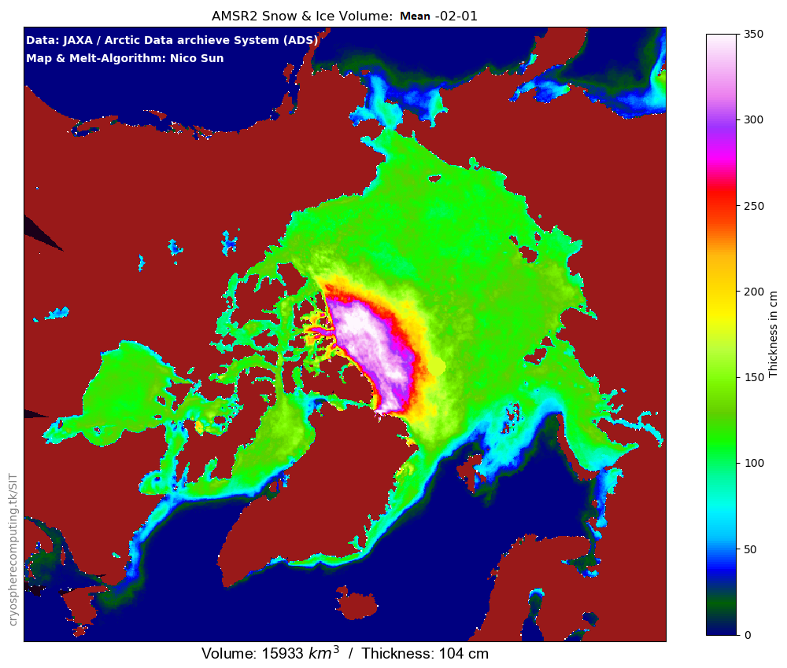
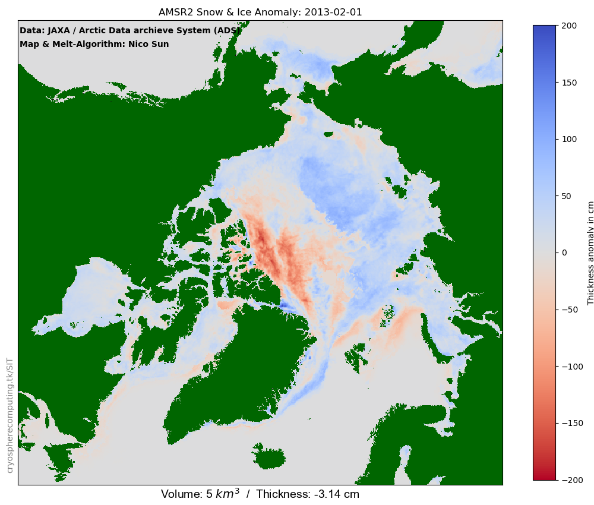
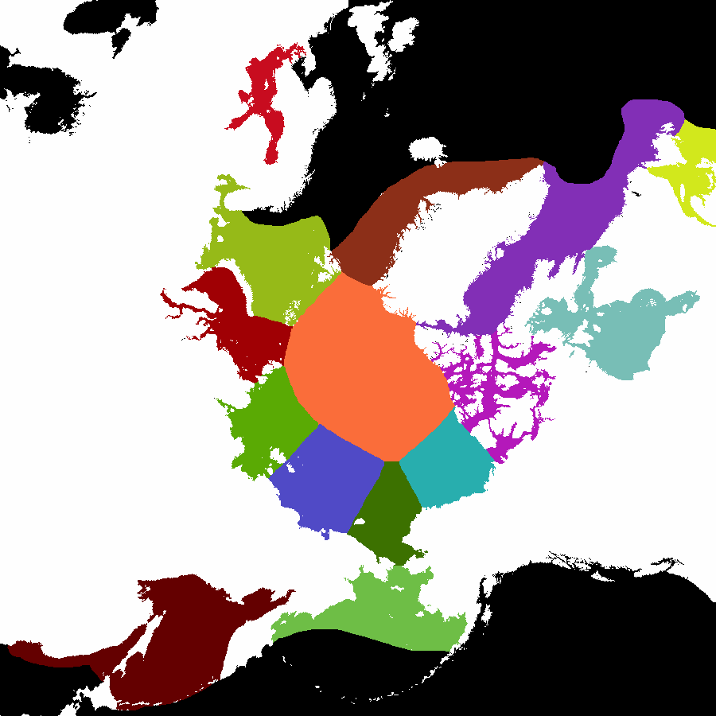

The AMSR2 sea ice volume model has received it's biggest update since release.The regional data is available to download as csv. I'm not sure yet how many regional graphs I will add.
The first major addition is a thickness anomaly map with an anomaly base of 2012-2020. It will be updated every year because the current 8 years of available data is too short for a climatic baseline.
The second addition is a regional breakdown. The ADS region map is modelled after the NSIDC region map to keep it consistent with the AWP model. In line with the region update the model also got an update to it's landmask. For an unknown reason the landmask in the daily data shifted around a bit and created coastline error. From now on the model only counts gridcells with less than 40% landcover in the offically supplied landmask. Also instead of all ice above 50N only sea ice in the shown regions will be considered in the volume and thickness data. Lake Ice will be ignored like in the NSIDC data.
In the first image you can still see the coastline error which has been removed. The whole coastline is surrounded by white dots.
  Any questions? Drop a note!